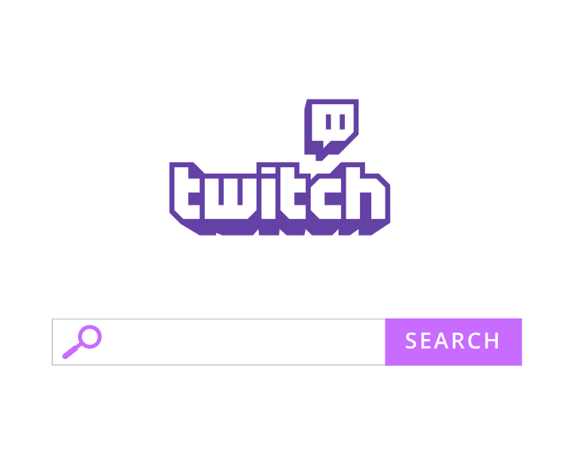

Waiting for TwitchAPI...
Waiting for TwitchAPI...
Waiting for TwitchAPI...
About
StreamRec is a simple front-end project that uses Twitch.tv's API to randomly recommend streamers. The inspiration for this project came from when I was scrolling through a post on the subreddit called "r/LivestreamFails" and read a comment about how it was hard to find new streams that weren't at the top of Twitch's list of streamers. That's why I made StreamRec to recommend livestreams on Twitch that range from the top to bottom end of the popularity spectrum.
